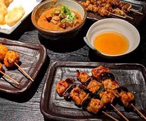

¿Por qué Japón?
Japón es un país de contrastes en el que las cuatro estaciones del año están muy marcadas. Cada estación vale muchísimo la pena, pero en este caso vamos hablar de las razones por las que viajar a Japón en primavera/ otoño.
Además, brindaremos más información sobre otros detalles a tener en cuenta si haces este viaje. Y también sobre festivales destacados en esta estación y onsen (温泉) para disfrutar con las temperaturas agradables de la primavera.
Es una de las mejores estaciones para los turistas. Porque muchos reniegan del calor infernal del verano y del frío intenso del invierno japonés.
Por eso, el otoño, con el colorido de las hojas rojas y la primavera, con el estallido de los cerezos en flor, son las épocas más populares para visitar Japón. Eso sí, tené en cuenta que también son las épocas más caras y con más cantidad de turistas nacionales y extranjeros.
En primavera, las temperaturas son agradables y podemos disfrutar de la naturaleza en todo su esplendor , sobre todo en lo que se refiere a la belleza del cerezo en flor.
El turismo en Japón es considerado el mejor de Asia y cuarto a nivel global según el ICVyT de 2017. Además obtuvo puntuaciones relativamente altas en casi todos los aspectos, especialmente en salud e higiene, seguridad y protección, recursos culturales y viajes de negocios.
Japón cuenta con 19 sitios del patrimonio mundial, incluyendo el castillo de Himeji, los monumentos históricos de la antigua Kyōto y Nara . Las atracciones turísticas más populares incluyen Tōkyō e Hiroshima, el Monte Fuji , estaciones de esquí como Niseko en Hokkaidō, la isla de Okinawa.
Un país exótico con un gran atractivo cultural, gastronómico y sobre todo tecnológico. La nación nipona va en camino a ser potencia mundial en turismo debido a su modernismo, la variedad de templos religiosos, plazas, calles que reflejan el día a día de su gente y su evolución constante, así como mercados callejeros y sitios de comida famosos por sus exóticos platos.
Cultura
La cultura de Japón
es el resultado de un proceso histórico que comenzó con las olas
inmigratorias originarias del continente asiático y de las islas del
océano Pacífico, seguido por una fuerte influencia cultural
proveniente de China. Posteriormente, el
shogunato Tokugawa instauró a mediados del
siglo XVII un largo periodo de aislamiento con el resto del mundo
(sakoku) que se prolongó hasta el comienzo de
la Era Meiji, a finales del siglo XIX, cuando
recibió una inmensa influencia extranjera que se acrecentó tras el fin
de la 2da Guerra Mundial.
Esto en efecto dio como resultado una cultura distinta a otras
culturas asiáticas.
En Japón,las interrelaciones personales están muy influenciadas por las ideas de «deber», «honor» y «obligación», conjunto conocido como giri, y que representa una costumbre diferente a la cultura individualista de las naciones occidentales. Las concepciones de «conductas deseables» y «moralidad» son menos practicadas en situaciones familiares, escolares y de amistad; sin embargo, se observa una práctica más formal frente a superiores o gente desconocida.
Viajar a Japón es hacerlo a una cultura totalmente distinta a la nuestra, es quizás la más diferente en cuanto a tradiciones y filosofía. También lo es por todos conocida dada la fama, sobre todo -durante las últimas décadas- en las que se ha posicionado como una marca por sí sola. Una cultura que adoran los abanderados del frikismo, del animé, de lo diferente y estrafalario, pero también una cultura de la buena gastronomía, y amante de las formas y la apariencia, lo bello y lo hermoso, de la armonía, la tranquilidad y el silencio, del respeto. Como vemos, una cultura diferente, muy diferente a lo que estamos acostumbrados.
Comida
Aunque dejamos afuera algunos platos debido a la enorme variedad de la gastronomía japonesa, te dejamos los que no se pueden escapar de nuestra lista:
-
Ramen:
Es uno de los tipos de comida japonesa más comunes. En un viaje de 20 días puedes llegar a probar más de 20 tipos de ramen diferentes, y hay tantos tipos y sabores que uno jamás se deja de sorprender.
Se trata de la gran maravilla gastronómica de Japón.
-
Kaiseki:
Es una cena tradicional japonesa de varios platos. Da gran importancia a los ingredientes de temporada y a la presentación.
Si hablamos de tipos de comida japonesa, el kaiseki es uno de los más tradicionales y trata de la búsqueda del equilibrio entre sabor, textura, aspecto y colores en la comida.
Se cuida meticulosamente cada detalle, incluso la vajilla en que se sirve cada plato.
Es un arte gastronómico, y para el comensal una experiencia única. -
Yakitori:
Sitios especializados en pinchos de pollo a la brasa. Son riquísimos.
Aún así, hay que probarlos y experimentar el ambiente del Shinjuku Omoide Yokocho en Tōkyō, el callejón delyakitori. Es toda una experiencia.
-
Tonkatsu:
Uno de los tipos de cocina japonesa más desconocidos. Se trata de un rebozado con panko típico japonés que, bien hecho, es una auténtica maravilla. Y cuando digo maravilla me refiero a que nos encontramos ante uno de los platos más ricos de la cocina japonesa, no os dejéis engañar por lo sencillo que parece.
Normalmente es de cerdo pero también se hace de ternera. Va con una salsa exquisita.
-
Takoyaki:
Uno de los platos típicos de la cocina de Osaka, en este caso lo que más encontramos en puestos callejeros paseando por sus calles.
Son buñuelos con pulpo dentro. -
Gyoza:
Es una empanada de harina de trigo rellena. Las hay de muchos estilos y formas diferentes, así como con todos los rellenos que podamos imaginar. Bien hechas son deliciosas.
Muy recomendable probar las de Gyoza Chao Chao en Kyōto.
Tres puntos que tenes que saber
-
Moneda
La moneda oficial que se utiliza en Japón es es el Yen (¥). Encontrarás billetes de 1.000, 2.000, 5.000 y 10.000 yenes. Las monedas son de 1, 5, 10, 50, 100 y 500 yenes.
En los hoteles y grandes centros comerciales es posible pagar mediante tarjetas de crédito internacionales. Sin embargo, a pesar de lo tecnológico que es Japón, en la mayoría de comercios y medios de transporte tendrás que pagar en efectivo. Por lo tanto, te recomendamos cambiar euros a yenes para los gastos diarios.
Se puede comer por 7-8€ y el agua es gratuita.
Se puede encontrar alojamiento por 25-30€ por persona y el Metro de Tōkyō cuesta 1,70€ el trayecto.Las líneas de tren Shinkansen de alta velocidad sí son caras.
-
Descubre Japón en tren con el Japan Rail Passs
El JR Pass es un pasaje multiuso con descuento con el que podrá viajar por todo Japón.
Ofrece acceso ilimitado a todos los trenes nacionales del grupo JR Pass, así como a servicios de autobús, ferris y traslado desde los aeropuertos al centro de las principales ciudades.
Vas a poder desplazarte por todo el país a un precio inferior al del coste de un billete de ida y vuelta Tōkyō-Kyōto (incluyendo el trasnfer desde el aeropuerto) en tren bala.
Comparado con el precio estándar de los billetes de tren de Japón, el JR Pass representa el mayor descuento posible en el transporte público japonés.
Es el más elejido por los viajeros que quieren ahorrar . -
En algunos Onsen no se puede:
Hay en algunos Onsen que no te dejan entrar por tener tatuajes para evitar la entrada de miembros de la Yakuza (mafia japonesa) que tradicionalmente están tatuados.
Los Yakuza (ヤク), también conocidos como gokudō (極道),son miembros de los sindicatos del crimen organizado transnacional originarios de Japón, ellos son diferenciados de los ciudadanos comunes ya que llevan su cuerpo adornado casi de pies a cabeza por grandes piezas de tatuajes con tigres, dragones, flores, etc; dependiendo del rango que ellos tengan en la organización.
Sin embargo, hay lugares que permiten el acceso de turistas con piezas tatuadas en su piel . Esta es una lista de aquellos Onsen en donde no habria problema de ingresar con tatuajes:
- Yawaragi no Sato Hoheikyo Onsen
- Ikaho Ishidan no Yu
- Sekisenkan
- Sai no Kawahara Rotenburo
- Yamato no Yu
- Nippori Saitoyu
- no Onsen
Curiosidades
-
La estación de Shinjuku, Tōkyō, es la más transitada del mundo, alrededor de 4 millones de personas viajan a través de sus 200 líneas todos los días, así que tener cuidado cuando viajáis en horas punta, os encontraréis rodeados de gente.
Eso sí, parece increíble pero nadie tropieza contigo. Estamos en el país más organizado del mundo, incluyendo a sus habitantes. -
Aunque sea un país con un alto nivel de vida y poder adquisitivo, podemos viajar a Japón sin quedar endeudados de por vida.
Se puede comer por menos de 10 euros, dormir en hoteles por 30 euros y moverse por el metro no llega a costar ni 2 euros . -
Si en algún momento tenemos sed o hambre durante nuestro recorrido por el país y no tenemos ningún supermercado cerca, Japón está repleto de máquinas de vending que incluso ofrecen cervezas y tabaco.
Además las botellitas con las distintas bebidas son super originales. Si te gustan las colecciones diferentes esta podría ser una de ellas. Hasta aquí también ha llegado la leyenda urbana de que se vendían ropa interior usada. -
Las puertas se abren hacia la izquierda (como las salidas de metro por ejemplo).
-
Los japoneses son extremadamente silenciosos y es en uno de los países donde más se practica la relajación. En esto sí que son dignos de admirar, ya que cultivan tanto el cuerpo como la mente dándole la misma importancia.
-
Irónicamente, al comer sí que está bien visto hacer ruido, lo cual significa que estás disfrutando de un buen manjar.
-
Sus ciudades son de las más seguras del mundo.
Si estás en una cafetería, podrás dejar el bolso o la mochila abierta y no tendrás ningún problema. -
Si estamos cenando o tomando algo en una cafetería, ni se nos ocurra dejar propina ya que para ellos es un signo de mala educación.